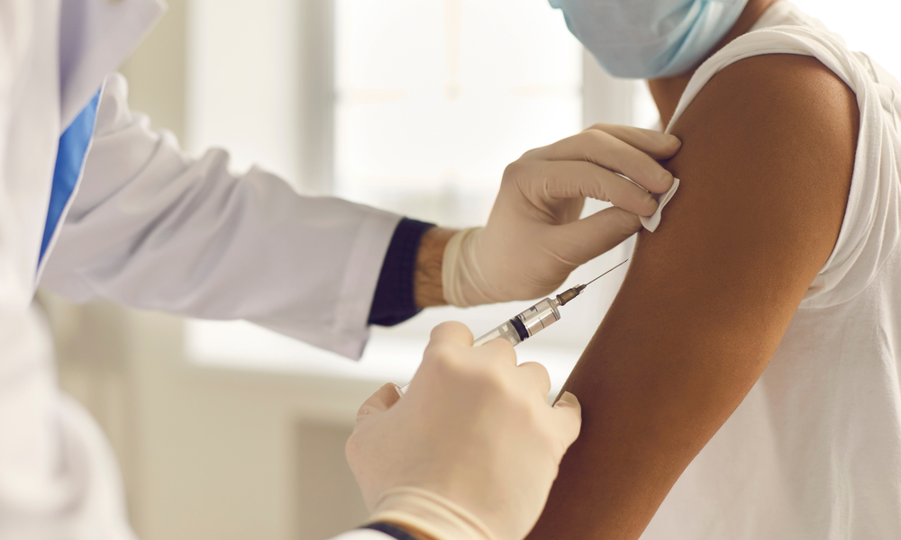
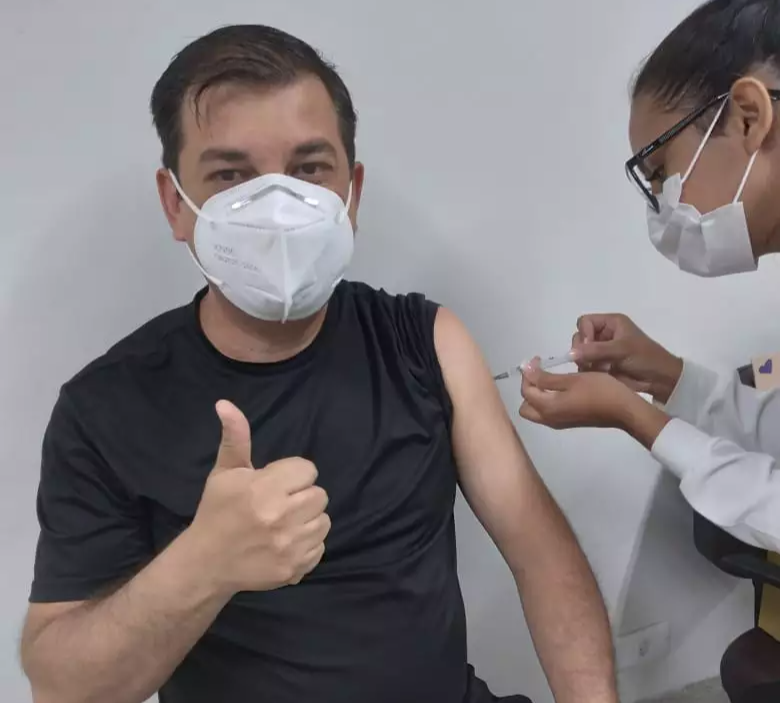

Pesquisa analisa efetividade da vacinação em massa contra casos graves de Covid-19
Um novo estudo da Fiocruz sobre a efetividade da vacinação no Brasil aponta que a população foi beneficiada pelo plano de vacinação contra o vírus Sars-CoV-2 na prevenção de casos graves e óbitos por Covid-19, apesar de variação da efetividade de acordo com a faixa etária analisada. A análise, que também incluiu vacinados com a primeira dose da Pfizer, foi realizada entre 17 de janeiro e 19 de julho de 2021, um total de seis meses, em que houve predominância da variante Gama. O estudo avaliou mais de 66 milhões de registros e está disponível no repositório online MedRxiv, sob a forma de preprint (sem revisão de seus pares).
Os resultados indicam uma diminuição da efetividade com o avanço da idade, o que reforça estudos anteriores que analisaram a efetividade dos imunizantes da AstraZeneca e Conoravac. No estudo atual, a efetividade com a CoronaVac na prevenção de casos graves entre indivíduos com mais de 80 anos foi de 29,6%, número muito inferior ao estimado para os idosos de 60 a 79 anos (60,4%).
As estimativas de efetividade na prevenção de mortes foram mais altas entre os adultos com idades entre 20 e 39 anos vacinados com o imunizante AstraZeneca, com 97,9%. Esse índice também é elevado, de 82,7%, entre os indivíduos de 40 a 59 anos vacinados com a CoronaVac.
A avaliação com o imunizante da Pfizer foi de proteção de 89,9% na prevenção de mortes no grupo etário de 40 a 59 anos, na maioria com a primeira dose. O estudo avaliou de forma conjunta indivíduos parcialmente e completamente imunizados e é a primeira avaliação nacional com este imunizante.
“A efetividade também variou entre as regiões (Norte, Nordeste, Sudeste, Sul, Centro-Oeste) e o efeito de redução de efetividade entre faixas etárias mais longevas foi mais pronunciado no Sudeste e no Sul. Como esperado, a efetividade aumenta com a segunda dose, portanto é importante completar o esquema vacinal”, diz o pesquisador Daniel Villela, coordenador e um dos autores do estudo. A pesquisa utilizou as bases de dados do SI-PNI e SivepGripe e contou mais de 66 milhões de registros no total, incluindo vacinados e casos, e 65,8 milhões de registros de vacinados, com uma dose ou esquema completo.
AstraZeneca
Ao analisar adultos com esquema completo de imunização, os valores estimados de efetividade da vacina AstraZeneca apontam que a prevenção de casos graves e óbitos está entre 80% e 90%. A depender do grupo etário, esse percentual pode superar 90% de eficácia. Para casos graves, a efetividade é um pouco menor: 79,6% no caso dos idosos de 60 a 79 anos e 66,7% para aqueles com mais de 80 anos.
CoronaVac
Valores de efetividade da CoronaVac, também considerado o esquema completo de duas doses, para casos graves e óbitos, estão na faixa entre 70 e 90%. Por outro lado, a estimativa para casos graves ficou no patamar de 58,4% mesmo entre adultos de 20 a 39 anos. Esse valor chega a 60,4% para idosos com idades entre 60 e 79 anos e 29,6% para idosos com mais de 80 anos. Ao avaliar óbitos, a efetividade foi igual a 45%.
Pfizer
A efetividade da vacina da Pfizer é de 80% a 90% com imunização parcial, ou seja, primeira dose, para adultos jovens (20 até 39 anos e 40 até 59 anos). A efetividade com o esquema completo não foi avaliada porque o número de pessoas com esquema completo foi pequeno em consequência do período analisado e a entrada mais tardia deste imunizante no plano nacional de imunização.
Metodologia
O estudo avalia um conjunto de dados, com mais de 66 milhões de registros, composto por bases nacionais de vacinação e de casos de Síndrome Respiratória Aguda Grave, que inclui óbitos. A avaliação de efetividade envolve um método estatístico que estima a redução do risco de indivíduos desenvolverem forma grave da Covid-19 ou mesmo de ir a óbito, caso estejam vacinados. O método requer taxas fornecidas tanto pelo número de casos observados no período, como pelo número de pessoas sob risco de infecção em cada um dos grupos imunizados e sem vacina, ponderados pelo tempo.